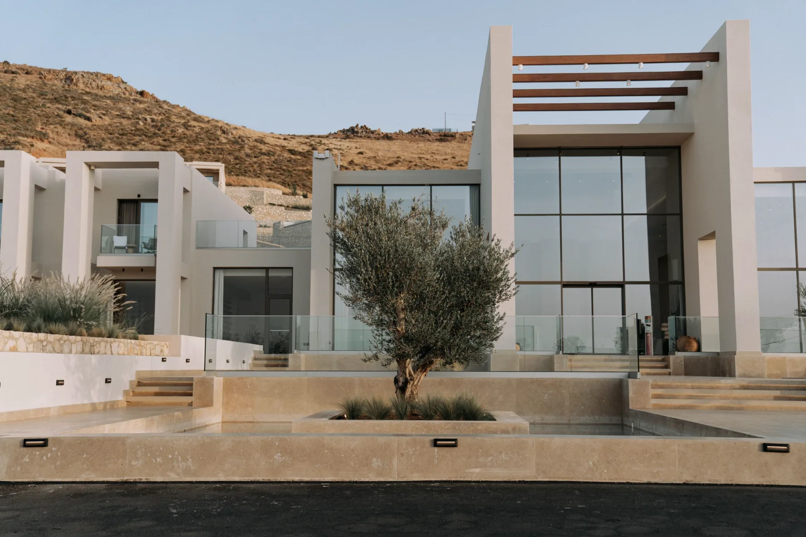

Home base
Cyprus
Where the practice sits, and the market it reads most closely.
On the record
- Union
- Member state since 2004.
- Currency
- Euro since 2008.
- Law
- Common law, inherited from the period to 1960.
- Language
- Greek and Turkish are official. English runs the business day.
- Position
- Where Europe, the Middle East and North Africa meet.
- Clock
- UTC+2. UTC+3 through the summer.
A foothold in Europe, at a crossroads.
Close to three continents, answerable to one legal tradition.

The consultation
Consider Cyprus within a portfolio.
The base market, and the one we read most closely.
Start a conversation